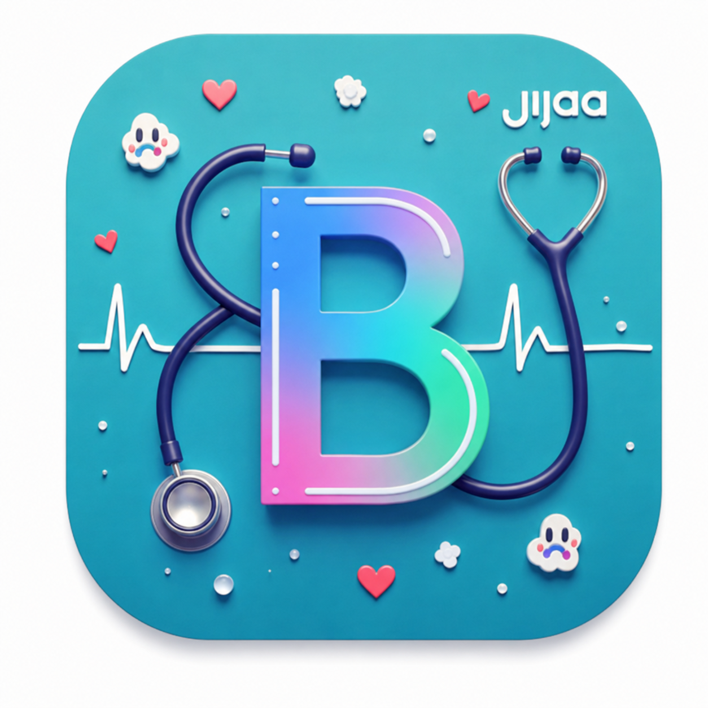

سرور مادر مرکز
وضعیت واقعی سرور، اتصال کلاینتها و بسته ویندوز مخصوص همین سرور
وضعیت
نسخه سرور
آدرس شناساییشده
شناسه سرور
در نصب ویندوز نسخه جدید، آدرس این سرور داخل فایل دانلودی قرار میگیرد؛ کاربر لازم نیست URL را بداند یا وارد کند. اگر دامنه سرور تغییر کند، کافی است بسته ویندوز را دوباره از همین صفحه دانلود کنید.